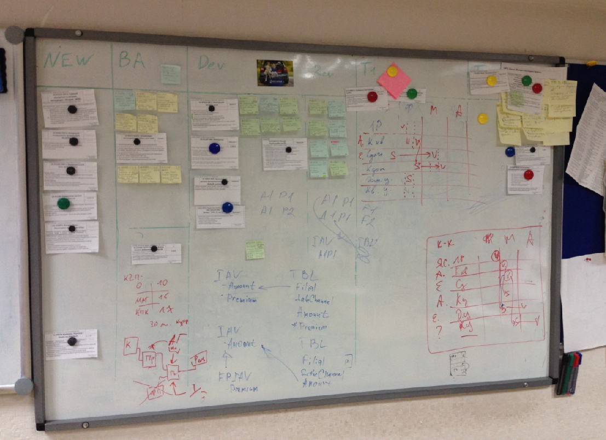
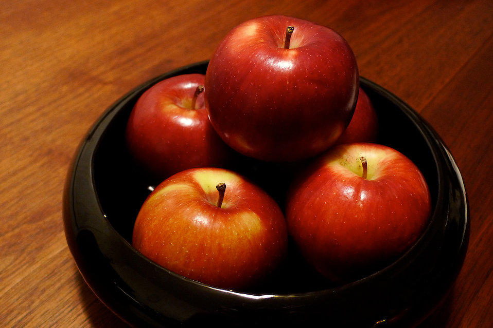
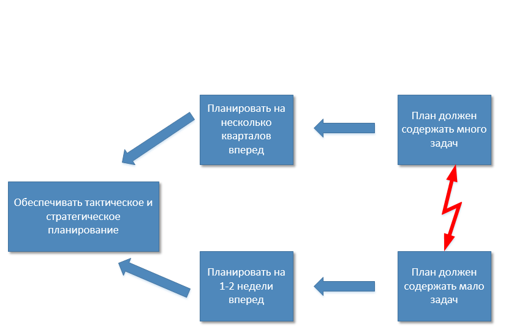

О визуализации производства (смотреть на модные карточки канбан).
например, такие...

О чем мы будем говорить:
Как Югории удалось за 1 год централизовать основные процессы
Какие подходы мы применяли в планировании
Можно ли использовать математику в управлении разработкой ПО
Какие правила из теории ограничений мы применяли, и как нам это помогло...
Реальные примеры и цифры.
Прежде чем двигаться дальше
Новый взгляд на производство страховых услуг:
Современная страховая компания - это ИТ-компания.
Производство ценности: станки + рабочие = непрерывный поток.
Из чего состоит ценность?
Концепции сервиса недостаточно
Сервис + секретный ингредиент.
В конце презентации ответ на вопрос о секретном ингредиенте...
Итак, начинаем...
Инструмент #1.
Культура производства
Стадии внедрения
Стадия №1. Переключение (подчинение).
Делаем точно по книге и как сказал эксперт.
Стадия №2. Адаптация к контексту.
Адаптируем методику под свой контекст.
Глубокое понимания методологии и принципов.
Стадия №3. Мудрость.
Создаем новое понимание, идею.
Переходим на новую ступень и отделяемся от заданного учения.
Принципы новой культуры
Минимально работающий продукт.
Частые изменения.
Личные коммуникации.
Видеть все своими глазами.
Безопасность для участников проекта.
Пример:
Как мы внедряли новую культуру производства:
с 3 кв. 2013 по 3 кв. 2014 г.
Фаза переключения (подчинения).
Работает одна группа.
История успеха и признание в компании.
Личное участие и личный пример топ-руководителей.
...
Как мы внедряли новую культуру производства:
В конце 2014 года:
Начало фазы адаптации.
Вовлечение компании в процесс (КФГ).
Переход от scrum к философии канбан.
...
Как мы внедряли новую культуру производства:
Сегодня:
Работает две макро-КФГ и набор маленьких КФГ.
Осуществляется ретроспектива на нескольких уровнях.
Непрерывное улучшение.
Инструмент #2.
Метод пяти яблок

Суть метода пяти яблок
Количество объектов внимания (управления)
для обычного человека
не может превышать пяти единиц
при значительном объеме интеллектуальной нагрузки,
которая сопровождается
не стандартными и быстро меняющимися условиями.
Количество объектов управления является условной константой.
(с) Карач Сергей
У кого сколько яблок?
У вашего подчиненного?
А у руководителя? ...
У вашего руководителя
мощность ограничена:
у него всего - "3 яблока".
Пример:
Как применить правило пяти яблок?
Как выглядит план по методу пяти яблок?
Как можно снизить потери на коммуникациях?
Можем ли мы решить противоречие планирования: тактика против стратегии?
...
Противоречие между тактическим и стратегическим планированием.
(Нотация "Грозовые тучи". Э.Голдратт)

Инструмент #3.
Некоторые принципы ТО.
Нельзя воплощать все инициативы:
Причина №1. Вы начнете устранять НЯ.
Устранение нежелательных явлений - дает ложное чувство прогресса.
Важно найти ключевую проблему.
Чаще всего - ограничение системы - организационные, не технические.
Чаще всего - конкретный департамент классической СК (заказчик) - оптимизирует себя.
Возникает конфликт между целями подсистемы и системы.
Нельзя воплощать все инициативы:
Причина №2. Вы сделаете лишнюю работу.
ПРИМЕР:Для горнолыжного курорта не нужно строить трассы высокой сложности. Более 80% клиентов - средние и начинающие лыжники.
Вывод: ваш продукт должен делать важные и простые вещи.
Пример:
Непрерывный поиск КП:
Кризис - это хорошо.
Например, при внедрении новой учетной
системы таких кризисов и пересмотров КП за 1 год было 3.
Инструмент #4.
Планирование и продукты
Принципы:
Непрерывное планирование.
Концепция минимально работающего продукта.
Разделение PBL на два списка: основной и оперативный (Short PBL-2мес)
Назначаем ли мы сроки команде?
Пример:
Команда способна разработать и опубликовать
11-12 историй за одну календарную неделю.
(На примере команды разработчиков Единой фронт-офисной системы
в ГСК Югория.)
 @sergk
@sergk